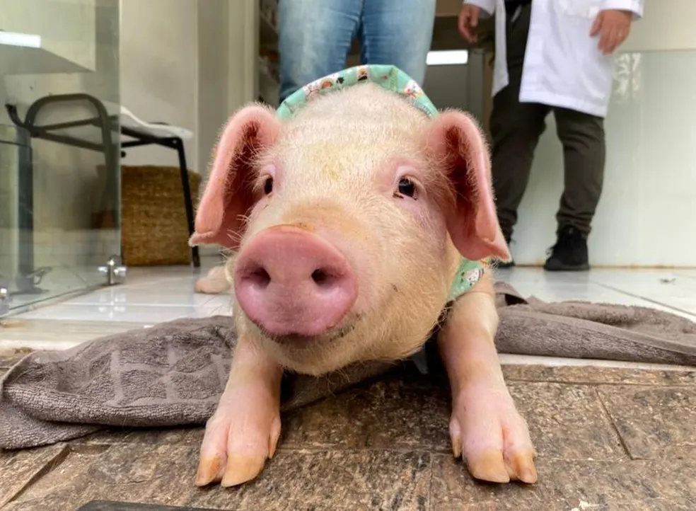
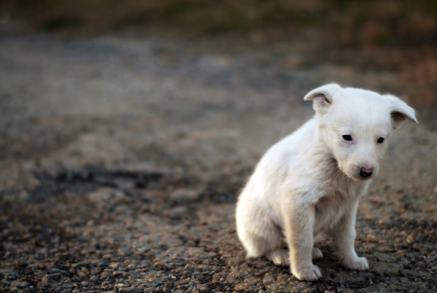
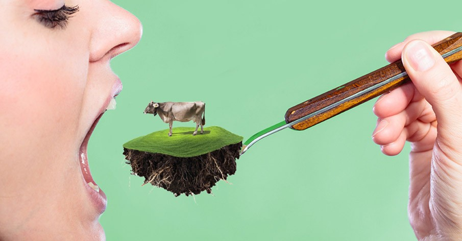
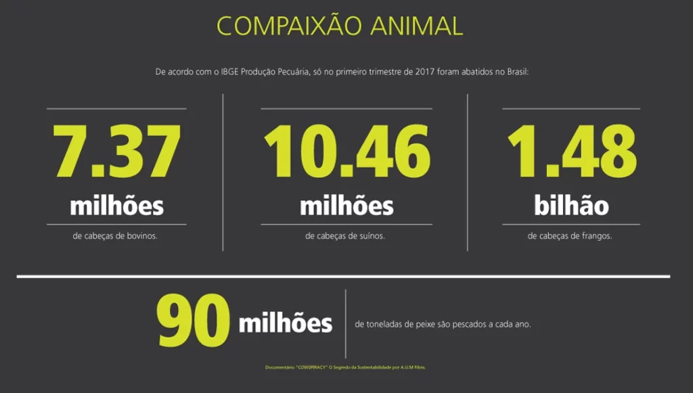

A "Voices of The Innocent" tem um sonho: mudar a forma como a sociedade se relaciona com os animais. Queremos desconstruir a ideia de que eles são seres inferiores e provar que são companheiros de jornada neste planeta, merecedores de nossa proteção e respeito. Buscamos inspirar uma nova percepção, onde o valor de um ser não é medido por sua utilidade para nós, mas por seu direito intrínseco de existir.
Essa transformação começa com uma pessoa de cada vez. Começa com você. Explore nosso trabalho, apaixone-se pelas histórias de nossos residentes e descubra o impacto poderoso de suas escolhas. Junte-se à nossa comunidade e ajude-nos a construir um mundo onde nenhuma voz inocente seja deixada para trás.
Seja a voz deles.


Escala global:
A pecuária é responsável pela exploração e morte de um grande número de animais todos os anos, com números que variam entre 70 e 92 bilhões.


VEGANISMO E SUA RELAÇÃO COM A SUSTENTABILIDADE: ALÉM DA CRUELDADE ANIMAL
A sociedade atual é consumida pelo desejo contínuo e desenfreada de possuir coisas em detrimento do viver e do ser. Desde a revolução industrial observa-se um consumo exacerbado, regido pelo capitalismo, em que o homem é o centro do universo. Notório observar as consequências desse consumo através do meio ambiente que clama por um novo modo de vida mais sustentável, sendo este o veganismo, livre de sofrimento e crueldade. Leia o artigo completo.